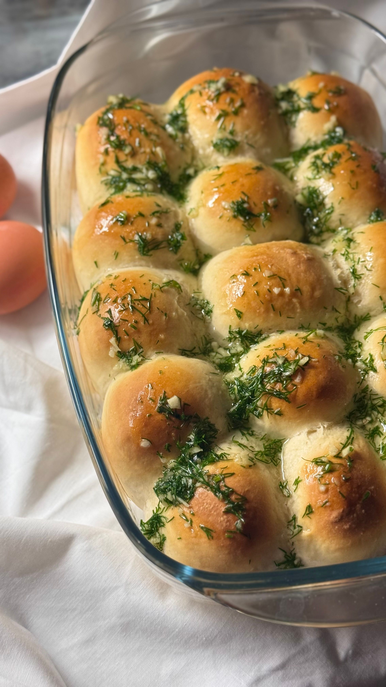

Garlic Dinner Rolls

Discription
Ingredients
- 3 3/4 cups all purpose flour
- 1 cup whole milk
- 1/4 cup granulated sugar
- 7 tbsp unsalted butter, divided
- 1 tbsp water
- 1 tbsp grated garlic, divided
- 1 tbsp chopped flat leaf parsely
- 1 1/2 tsp kosher salt
- 1 envelope of active dry yeast
- 1 large egg yolk at roomm temp
- 2 large eggs at room temp, divided
Directions
- In a small saucepan, combine milk and teaspoon of garlic. Cook over medium heat, stir occasionally, just until bubbling around the edges of the pan. This should take around 4 minutes
- Remove from heat and pour heated milk into the bowl of the stand mixer. Fix dough hook to stand mixer. Stir in sugar and 4 tbsp of butter. Stir mixture occasionally while mixture cools to a temperature between 110 degrees to 120 degrees. When it reaches temp, stir in yeast and let stand until yeast has bloomed with bubbles on surface. About 10 minutes
- Into bowl of mixer add two cups of flour, salt, the egg yolk, and 1 egg. Turn on mixer to low speed until combined, ~1 minute. With mixer on low speed, add 1 3/4 cups of flour half a cup at a time. When flour is all added let mixer beat for 1 minute until dough just comes together.
- Increase mixer speed to medium and beat until dough pulls away fromm the sides of the bowl. The dough will be very smooth and elastic, about 10 minutes.
- Coat a large bowl with cooking spray. Place dough into new bowl and flip dough over so that both sides are coated. Cover with plastic wrap and let rise in a warm place until doubled in size, about 1 hour.
- While dough is resting, heat 3 tbsp of butter and 2 tsp of garlic in a small saucepan, over medium low. Cook until butter is melted and garlic is ffragrant, stir occasionally. transfer 1 1/2 tbsp of the garlic butter into a small bowl. Keep the reamining garlic butter in the saucepan.
- With coooking spray, lightly coat a 9x13 inch pan. With a clean hand punch down dough. Then turn out dough onto a floured surface. Divide dough into 20 pieces. Form each piece into a ball and pinch close.
- Coat each dough ball with the garlic butter sauce from saucepan. Place each ball with the seam side down onto greased 9x13 pan. Cover pan with plastic wrap and let rise at room temp until doubled in size, about 30-45 minutes.
- While dough is rising, preheat oven to 350 degrees.
- Whisk 1 egg and water together. When dough is done rising, take plastic wrap off dough and brush the top of the rolls with the egg wash.
- Bake rolls in oven until the tops are golden brown, this should take 18 to 20 minutes.
- Stir chopped parsely into the 1 1/2 tbsp of reserved garlic butter. When rolls are done baking brush then with the garlic butter.
- Serve warm and enjoy!